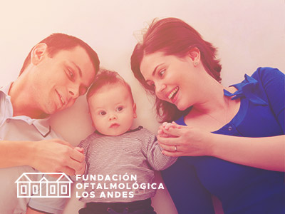
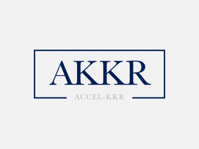
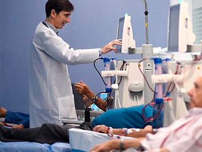
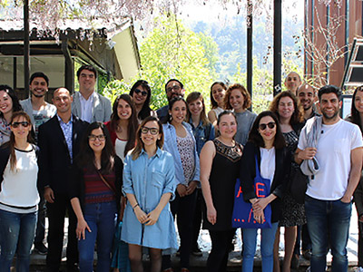
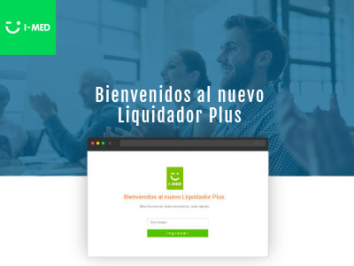

 Reembolso multicompañías: Junto a Fundación Oftalmológica Los Andes hacemos realidad Febrero / 2017 En un esfuerzo entre las compañías de seguros, de asistencias, bienestar y la Fundación Oftalmológica Los Andes....
¿Crees que la desaceleración afectó el volumen de atenciones ambulatorias y hospitalarias? Enero / 2018 Durante el mes de diciembre, un artículo en el diario “El Mercurio” indicó: "la desaceleración (económica) golpea...
 Este 2018 comenzamos con una gran alianza: Accel-KKR junto a I-Med Enero 2018 Este año 2018 que empieza viene con cambios positivos, tal como la asociación con la compañía estadounidense Accel-KKR....
¿Crees que la desaceleración afectó el volumen de atenciones ambulatorias y hospitalarias? Enero / 2018 Durante el mes de diciembre, un artículo en el diario “El Mercurio” indicó: "la desaceleración (económica) golpea...
 FONASA implementa el Nuevo Modelo de Gestión de Atención de Salud Renal Enero / 2018 El pasado 1° de octubre del año recién pasado, FONASA implementó el Nuevo Modelo de Gestión de Atención de Salud Renal...
Scotiabank le entrega un nuevo beneficio a sus colaboradores para sus atenciones de salud Enero / 2018 A contar del pasado 1° de enero de este año, Scotiabank se incorporó a nuestra red de clientes con el servicio “Aporte Complementario”...
 I-Med Estamos siempre abiertos a escuchar nuevas ideas Dic / 2017 El Magíster de Diseño Avanzado de la UC (MADA) realizó un workshop de una semana completa sobre "Difusión de la Innovación"...
 Nuevo Servicio Liquidador Plus: Siempre pensando en facilitar la atención Dic / 2017 Nuevo Servicio Liquidador Plus: Siempre pensando en facilitar la atención de salud a las personas Éste es un servicio pensado en las...
Cuenta Médica Interoperable de Fonasa: I-Med participando de la integración Dic / 2017 Cuenta Médica Interoperable es una plataforma web, desarrollada por Fonasa, que permite la validación de sus beneficiarios
I-Med abre nuevos canales de comunicación: Hoy somos parte de las redes sociales Dic / 2017 La comunicación con todos nuestros clientes es fundamental para ir mejorando día a día. Es en esta línea que hemos estado avanzando...